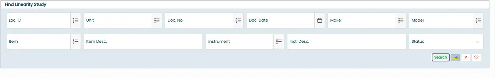
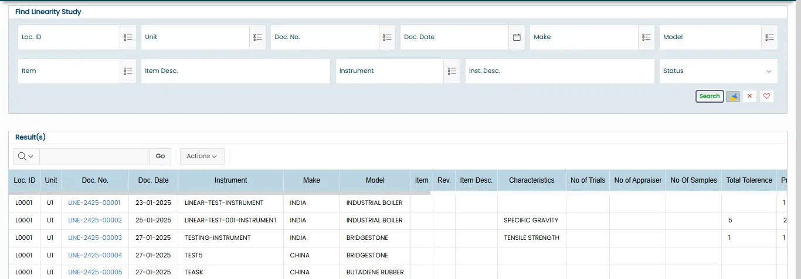
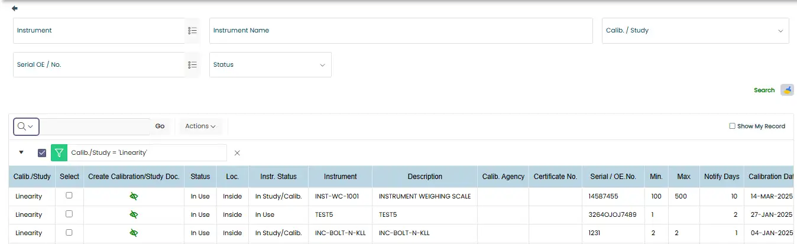
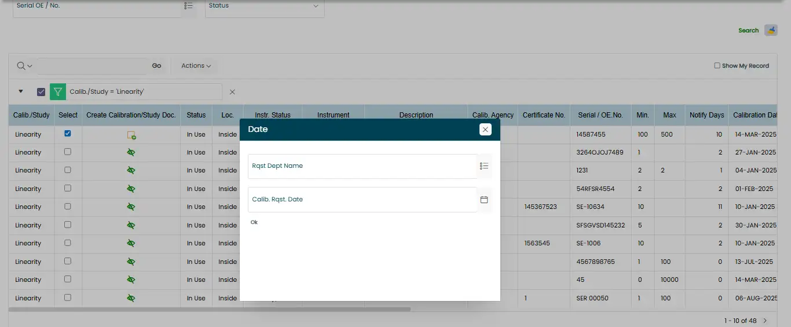
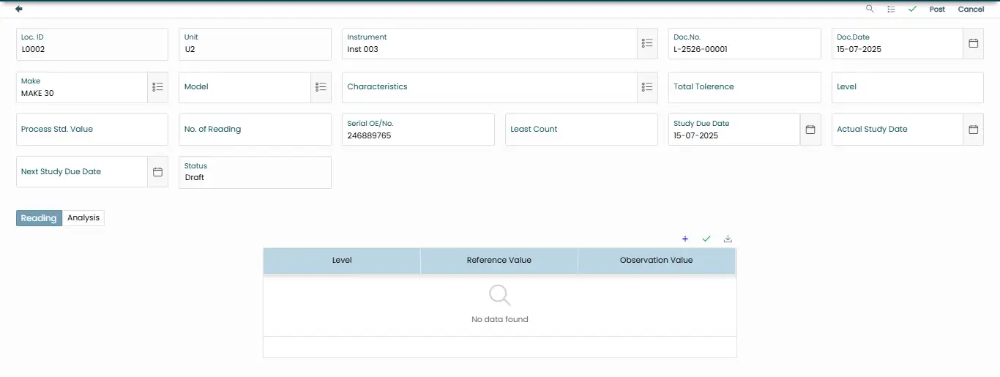

<div data-category="Quality control Management" data-title="Linearity Study" data-updated="December 01, 2025" data-contributors="RoadmapIT" data-breadcrumb="Home,Quality control Management,Linearity Study">
  <div class="page-content">
    <p>A linearity study in quality management is part of Measurement System Analysis. It evaluates whether the measurement system's bias (the difference between the measured value and the true value) remains consistent across the entire range of measurements. Essentially, it checks if the measurement system performs uniformly, regardless of the size or scale of the measurement. This screen is used to view documents that are listed for Linearity Study.</p>

    <h5>Navigation Path</h5>
    <p class="fs-6">Quality Management \ Transaction \ Measurement System Analysis \ Linearity Study</p>

    
    <ul style="list-style-type: none; align-content: center">
      <li class="mouse-icon">Search screen displays the list of Linearity Study documents with the relevant details and status.</li>
      <li class="mouse-icon">User can filter the respective documents by entering the search parameters at the header.</li>
    </ul>

    
    <ul style="list-style-type: none; align-content: center">
      <li class="mouse-icon">On clicking search button, system displays results relevant to the search parameters entered.</li>
      <li class="mouse-icon">
        Using
        
        icon, entered search parameters can be cleared.
      </li>
      <li class="mouse-icon">
        To close the screen, use
        <i class="bi bi-x fs-4 mx-2 text-danger"></i>
        icon.
      </li>
      <li class="mouse-icon">To create a Linearity Study document, go to pending screen in calibration and select the instrument.</li>
    </ul>

    
    <ul style="list-style-type: none; align-content: center">
      <li class="mouse-icon">
        Click on
        <i class="bi bi-check-lg fs-4 mx-1 text-success"></i>
        Create Calibration/Study Doc. button to create Linearity Study document.
      </li>
    </ul>

    
    <ul style="list-style-type: none; align-content: center">
      <li class="mouse-icon">Select the Rqst. Dept. Name.</li>
      <li class="mouse-icon">Select Calib. Rqst. Date.</li>
      <li class="mouse-icon">Click OK.</li>
    </ul>

    
    <ul style="list-style-type: none; align-content: center">
      <li class="mouse-icon">Select the Model.</li>
      <li class="mouse-icon">Select the Characteristics.</li>
      <li class="mouse-icon">Enter the Total Tolerance, Level, and Process Std. Value.</li>
      <li class="mouse-icon">Enter the No. of Readings.</li>
      <li class="mouse-icon">Enter the Least Count.</li>
      <li class="mouse-icon">Select the Actual Study Date.</li>
      <li class="mouse-icon">Select the Next Study Date.</li>
      <li class="mouse-icon">
        Click the
        <i class="bi bi-plus fs-4 mx-2 text-primary"></i>
        button to add a new Reading.
      </li>
      <li class="mouse-icon">Enter Level.</li>
      <li class="mouse-icon">Enter Reference Value.</li>
      <li class="mouse-icon">Enter Observation Value.</li>
      <li class="mouse-icon">If required, enter analysis details in the Analysis tab.</li>
      <li class="mouse-icon">
        Click on
        <i class="bi bi-check-lg fs-4 mx-1 text-success"></i>
        to save.
      </li>
      <li class="mouse-icon">Click Post button to post the document.</li>
    </ul>
  </div>
</div>